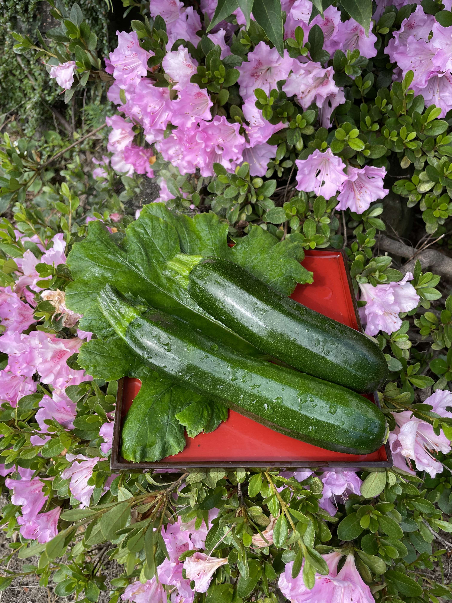

ズッキーニ
ズッキーニはカボチャの一種で、お料理にとても便利な夏野菜です。当店のズッキーニは化学肥料や化学合成農薬を使わずに育てています。新鮮で、安全・安心なズッキーニをお楽しみください。
特性
- 肉質が柔らかく、淡白な味わい
- 種類によっては、甘みを感じることも
- 料理方法は多岐にわたる（炒め物、揚げ物、蒸し物など）
野菜の苗植え・収穫時期
ズッキーニの苗植えは春から夏にかけて行います。収穫時期は苗植えから約2か月後の夏から秋にかけてです。気候や栽培方法によって若干の変動がありますので、詳細な時期は専門の農業資料などをご参考にしてください。
ズッキーニの写真

採れた日付: 2023年6月28日